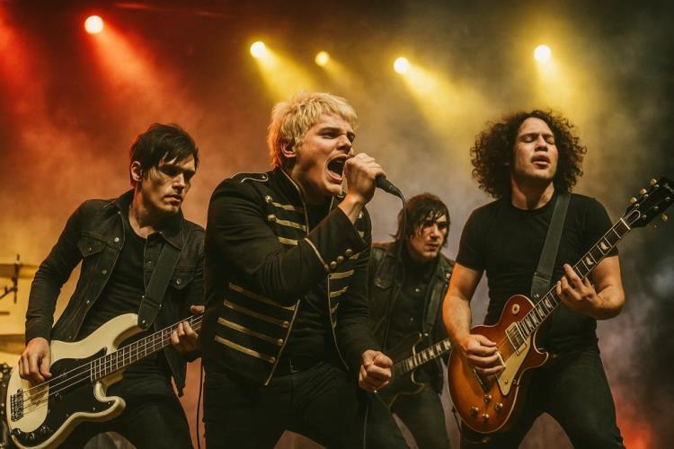

My Chemical Romance

My Chemical Romance, also known as MCR, is a rock band recognized for its dramatic performances, emotional lyrics, and distinctive style. Currently finishing their tour for the 20th anniversary. That brought Nostalgia back and also a theatrical show with explosions and made up characters and languge.
The band gained major popularity in the 2000s with the songs I'm not Okay, Helena and Ghost of You. This pushed them into mainstream and followed up their success with the album The Black Parade which push them to full stardom starting strong with the song welcome to the black parade, Famous Last, Teenagers and Famous Last Words, The last album they released before their hiatus was Danger Days another Evolution of their styles bringing along a more poppier sounds and brighter color videos for songs like Na Na Na and sing. Mcr came back in the 2020s before the pandemic hit to start playing concerts unfortunately postponed due to the pandemic, They came back with the band to bring us the 20th Anniversary of The Black Parade. For me growing on these albums my all time Favorite was Three Cheers for sweet revenge but still I got to enjoy the anniversary shows for the Black Parade that meant alot for the teenager in me.
Popular Songs
- Welcome to the Black Parade
- I'm Not Okay (I Promise)
- Helena
- Teenagers
- Famous Last Words
- Ghost of You